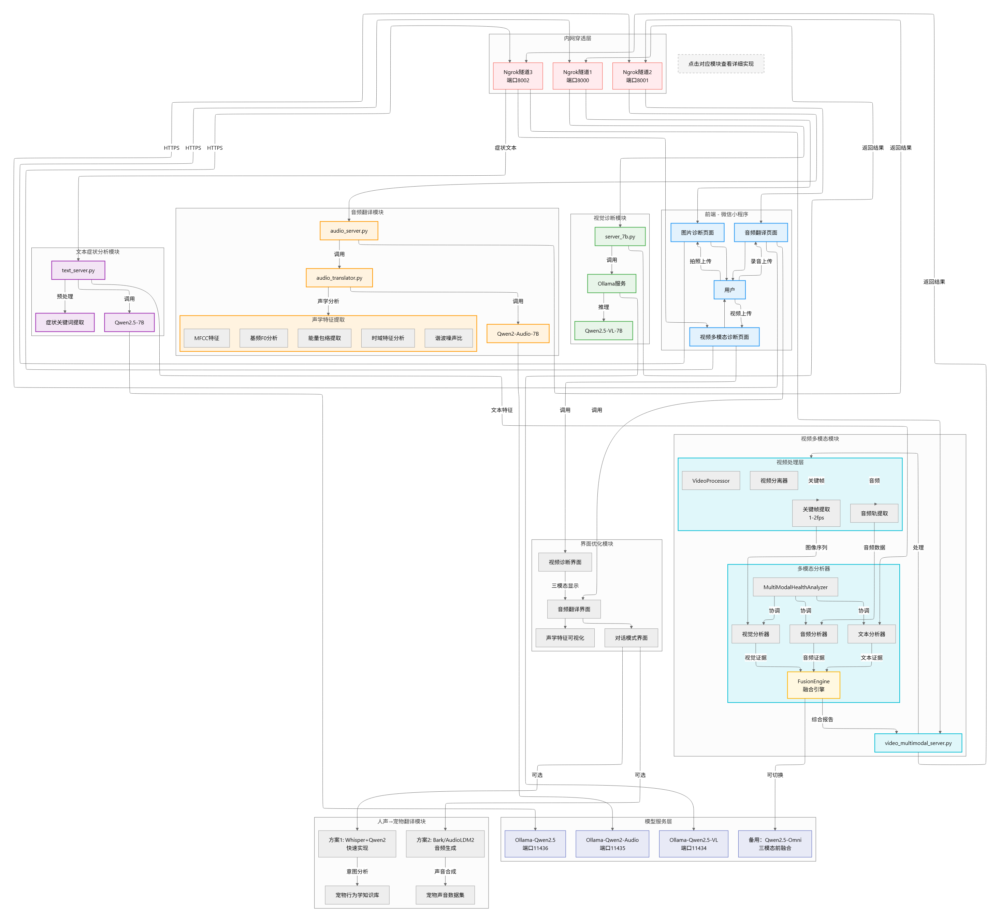
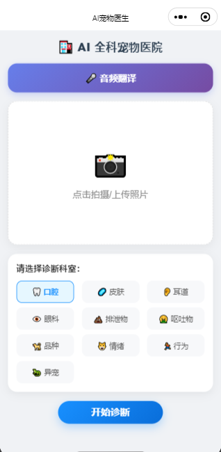
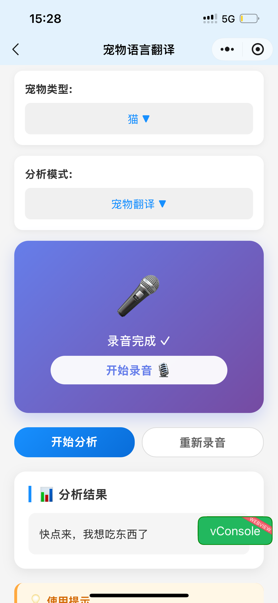
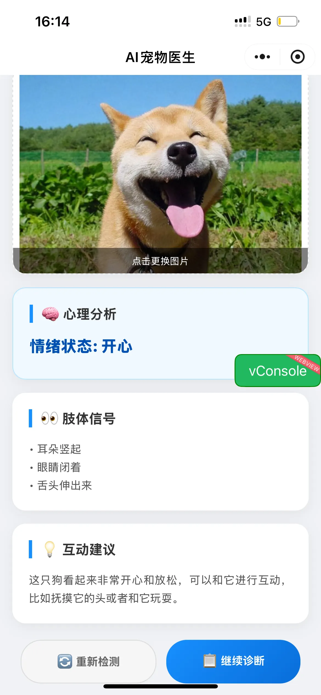

CUI XINYU
☰
Home
About
Projects
Contact
🇨🇳 中文
🇺🇸 English
🇰🇷 한국어
🇯🇵 日本語
← 返回项目列表
宠物健康 AI 智能诊断系统
基于 Qwen2.5-VL 多模态大模型与 RAG 技术的全科宠物医疗辅助平台
微信小程序
全科诊断
异宠支持
行为分析
🏗️ 系统架构 (System Architecture)
arch.png'">
架构设计说明：
🩺 AI 临床诊断模块 (Clinical Diagnosis)
基于 CV 计算机视觉与医学知识库，覆盖四大核心科室。
🦠
皮肤病变检测
Contrastive Learning
👂
耳道健康分析
Texture Analysis
👁️
眼科疾病筛查
YOLOv8-Seg
💩
消化系统分析
Medical Logic
🧠 行为与认知分析 (Behavior & Cognition)
😺
多模态情绪识别
Multimodal Fusion
🐕
异常行为监控
Action Recognition
🔎
精准品种鉴定
Fine-grained Classification
🐹 异宠专科支持 (Exotic Pets)
🦎
爬行类与小型哺乳动物支持
针对非犬猫类宠物建立专门的知识库与识别模型，填补市场空白。
📱 界面功能展示 (UI Showcase)

1. 主界面

2. 宠物音频翻译界面

3. 部分结果展示